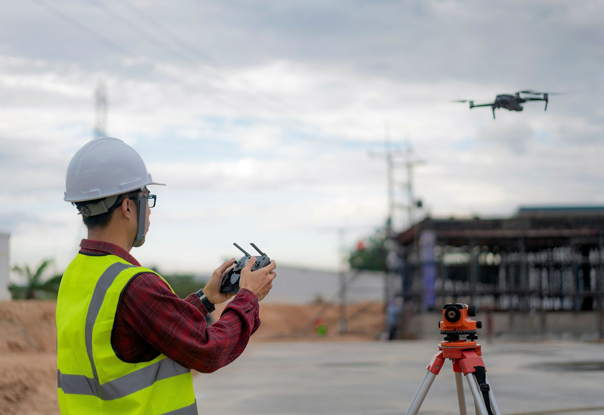

con la llegada de la pandemia, el boom de la modernización se tomó a las industrias y el sector de la construcción no fue la excepción. Ante las políticas de distanciamiento social, drones, cámaras y otras tecnologías se apoderaron de las labores de obra de grandes constructoras y empresas de ingeniería y con ello, el sector se abrió paso a una revolución tecnológica de la que antes era esquiva.on la llegada de la pandemia, el boom de la modernización se tomó a las industrias y el sector de la construcción no fue la excepción. Ante las políticas de distanciamiento social, drones, cámaras y otras tecnologías se apoderaron de las labores de obra de grandes constructoras y empresas de ingeniería y con ello, el sector se abrió paso a una revolución tecnológica de la que antes era esquiva.on la llegada de la pandemia, el boom de la modernización se tomó a las industrias y el sector de la construcción no fue la excepción. Ante las políticas de distanciamiento social, drones, cámaras y otras tecnologías se apoderaron de las labores de obra de grandes constructoras y empresas de ingeniería y con ello, el sector se abrió paso a una revolución tecnológica de la que antes era esquiva.
